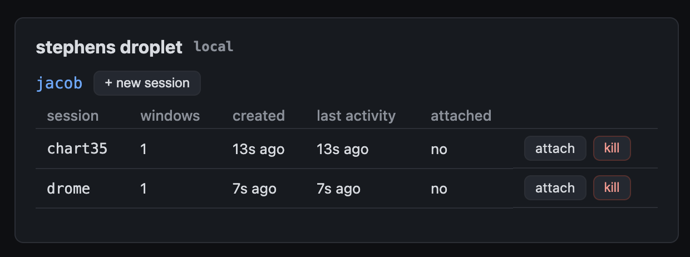

>_ muxboard
A web dashboard for your tmux sessions - across one host or a whole fleet, with a live terminal in the browser.
A Flask blueprint you embed in your own app. List, create, kill, and attach tmux sessions over SSH, with create-specific scopes, default-deny auth, and a threat model that takes "remote shell over the web" seriously.

What it does
Everything you would SSH in to do, surfaced in one cache-backed dashboard.
Multi-host inventory
Point it at one machine or a fleet over SSH (key or password). A single host is just the n=1 case of the same config.
Live in-browser attach
A real terminal over a WebSocket-to-PTY bridge and xterm.js. Resize, scrollback, and read-along with other clients.
Create, kill, list
Spin up a session with a startup command, kill one behind a type-the-name confirm gate, and watch them all in a sweep-refreshed list.
Default-deny auth
You must pass an authorizer. Gates ship for tokens, signed cookies, and proxy headers - or write your own and scope each person to specific users.
Reuse existing login
Mount under a same-host path like /console/ and call signed_cookie_auth with the secret your ops app already signs. No second hostname, no second password. Browser fetch and WebSocket attach carry the cookie.
Per-user multiplexing
Manage several Unix users' sockets per host via sudo -n -u, so one login can see deploy, ops, and ci sessions.
Create scopes
Let a principal inspect shared service-account sessions while creating new work only as their own Unix account.
Operator ergonomics
Numeric session names sort naturally, and a newly created session is marked and scrolled into view after the dashboard reloads.
Caps and teardown
Per-principal and global attach limits, a 6-hour lifetime cap, and full process-group teardown so nothing leaks fds or zombies.
Quickstart
Embed the blueprint in a Flask app. Install into a project venv - not the system Python. On Debian/Ubuntu, bare pip install fails with externally-managed-environment (PEP 668); that is intentional. The [deploy] extra pulls gunicorn and gevent (required for WebSocket attach).
python3 -m venv .venv source .venv/bin/activate pip install "muxboard[deploy] @ git+https://github.com/JacobStephens2/muxboard"
# Prefer signed_cookie_auth when an ops app already logs people in # (same-host path /console/ - no second password). token_auth is fine for scripts. import os from flask import Flask from muxboard import Host, Muxboard, signed_cookie_auth board = Muxboard( hosts=[Host(key="local", hostname="localhost", tmux_users=("deploy",), local=True)], authorize=signed_cookie_auth( os.environ["SESSION_SECRET"], cookie="dash_session", salt="dashboard-session", name="ops", allowed_users=frozenset({"deploy"}), ), allowed_origins=["https://ops.example.com"], ) app = Flask(__name__) board.init_app(app, url_prefix="/console") board.start()
# gunicorn -k gevent -w 1 -b 127.0.0.1:3492 app:app
# Reverse-proxy /console/ with WebSocket upgrade. systemd: PrivateTmp=false if local=True.
Deploy checklist (Apache + systemd), fleet example, and the threat model live in the README and examples/deploy.
Read the threat model first
muxboard is not a toy widget. Treat it with the seriousness you would treat sshd.
This grants authenticated remote-shell access over the web. A misconfigured gate is a root shell for a stranger. The defaults fail closed - an unconfigured board denies everything - but the security of your deployment is a property of your configuration. The README documents the attack surface, what is already mitigated (command-injection quoting, cross-site WebSocket protection, create scopes, confirm gates, resource caps), and what you must do yourself (TLS, rate limiting, least-privilege tmux_users).